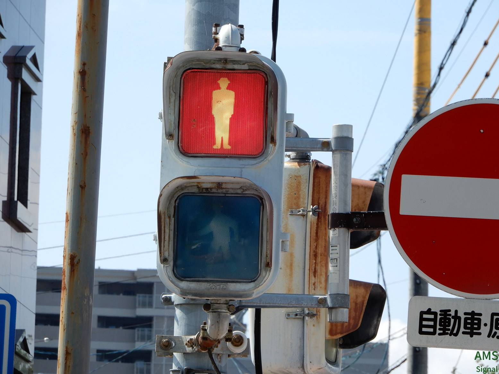
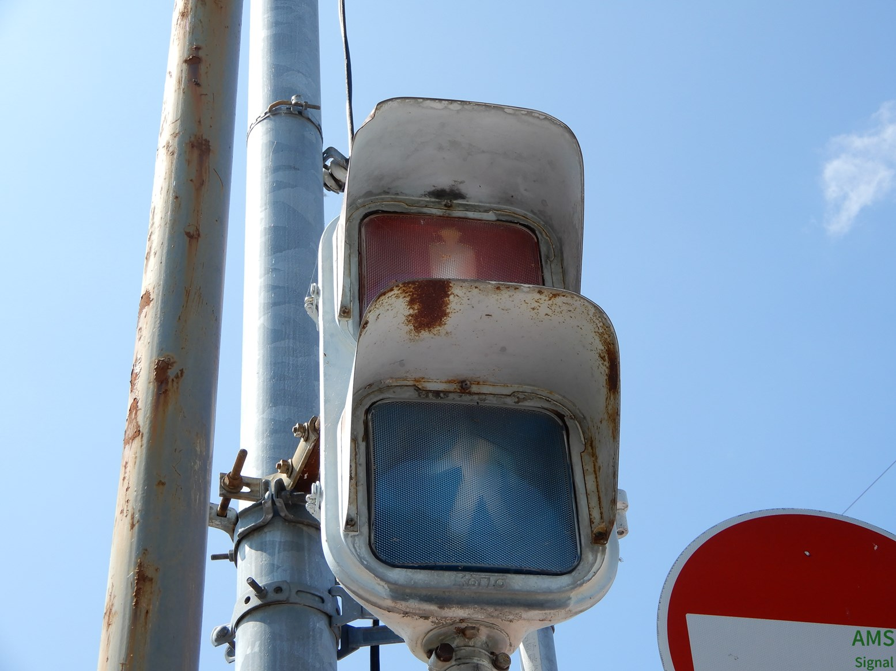
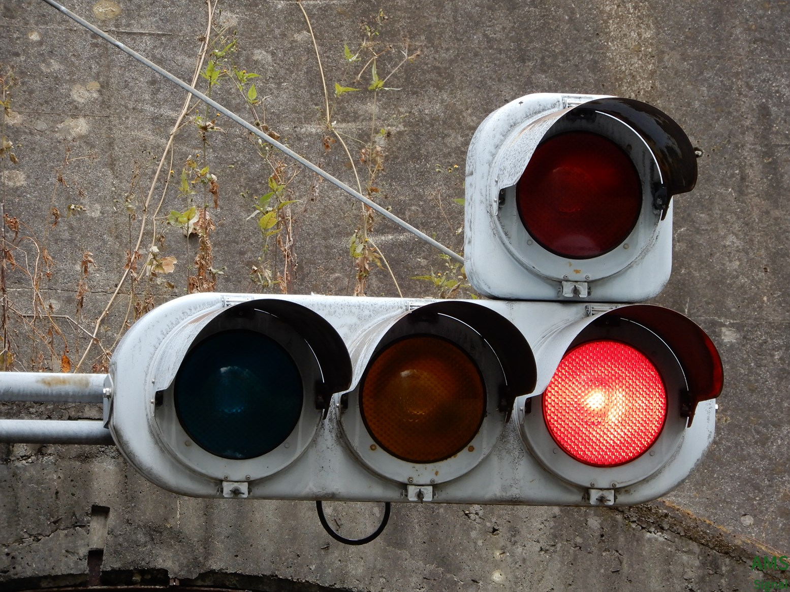

安曇野市
堀金

撮影 2022/09/21
掲載 2022/11/27
独自管理番号β(安曇野市のみ対応)：220-026
北海渡更新済み(2024/03/10)


撮影 2022/12/03
掲載 2023/01/10
独自管理番号β(安曇野市のみ対応)：220-004
下鳥羽


撮影 2023/01/08
掲載 2023/01/10
独自管理番号β(安曇野市のみ対応)：220-057
豊科駅入口

撮影 2022/11/27
掲載 2022/11/27
独自管理番号β(安曇野市のみ対応)：220-071
楡（住吉神社入口）


撮影 2023/06/10
掲載 2023/07/02
独自管理番号β(安曇野市のみ対応)：220-021
松本市
二子


また、同交差点内には長野県最古の歩灯があります。


撮影 2023/03/05
掲載 2023/03/07
二の丸信号機廃止済み(2022/12/10)


日本最古と言われていた小糸おにぎりがありました。(S43.9製)現在は撤去済みです。撮影 2022/08/09
掲載 2022/12/14
中央一丁目更新済み(2023/01/28)

撮影 2022/09/03
掲載 2022/11/27
巾上
以前はDK2とTK2でしたがなんと3位灯と矢印で色違いの電材低コスト親子が設置されました！
撮影 2022/10/30
掲載 2022/11/27
アルプス口


撮影 2022/10/30
掲載 2022/11/27
塩尻市
塩尻駅入口
この交差点は電線地中化ついで的な感じで美装化され、同交差点内にあった電球式やLED灯器も電材低コストに更新されたのですが....

撮影 2023/03/09
掲載 2023/04/09
その他の市町村
小諸駅近く(小諸市)

交互通行のトンネルで赤の時間が長くて電球切れの事態を想定しているのかおまけの赤一灯がついています。訪問時上の赤は残念ながら点灯しませんでした。撮影 2022/11/20
掲載 2022/11/27
神子柴（南箕輪村）


撮影 2023/04/22
掲載 2023/06/03
中部電力前(飯田市)